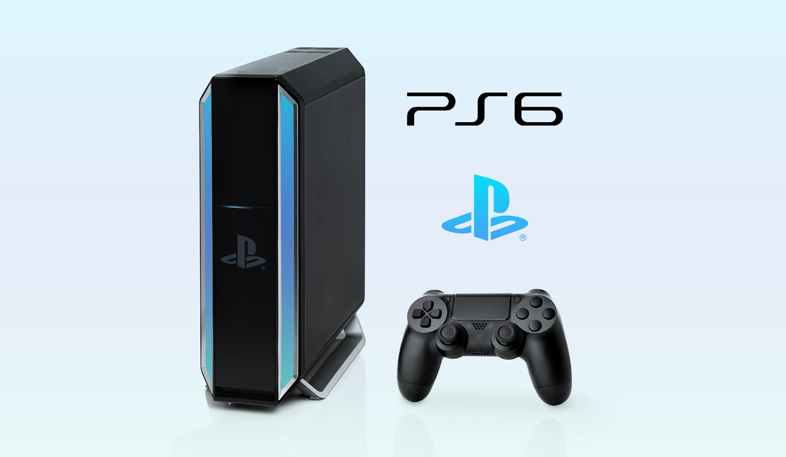

Se anuncia nuevo juego de la saga "Final Fantasy"
La compañía Square Enix ha anunciado el lanzamiento de un nuevo juego de la serie "Final Fantasy", titulado "Final Fantasy XVI". La saga de rol japonesa, una de las más populares de la industria, vuelve con una nueva entrega que promete sorprender a los fanáticos con su historia épica y su impresionante apartado visual.
Fecha de publicación: 15 de mayo de 2024
Fuente: Square Enix Press Release
Se revelan detalles del próximo juego de la saga "The Legend of Zelda"

Los desarrolladores de Nintendo han compartido nuevos detalles sobre el próximo juego de la saga "The Legend of Zelda", que se espera sea lanzado a finales de este año. El juego promete llevar la serie a nuevas alturas con un mundo abierto más grande, mecánicas de juego innovadoras y una historia emocionante.
Fecha de publicación: 20 de mayo de 2024
Fuente: Nintendo Direct
Anunciado evento de lanzamiento de la consola "PlayStation 6"
Sony ha anunciado un evento especial de lanzamiento para su próxima consola, la "PlayStation 6". El evento, que se llevará a cabo en línea, presentará detalles sobre el diseño, las especificaciones y los juegos de lanzamiento de la muy esperada consola de próxima generación de Sony.
Fecha de publicación: 25 de mayo de 2024
Fuente: Sony PlayStation Blog